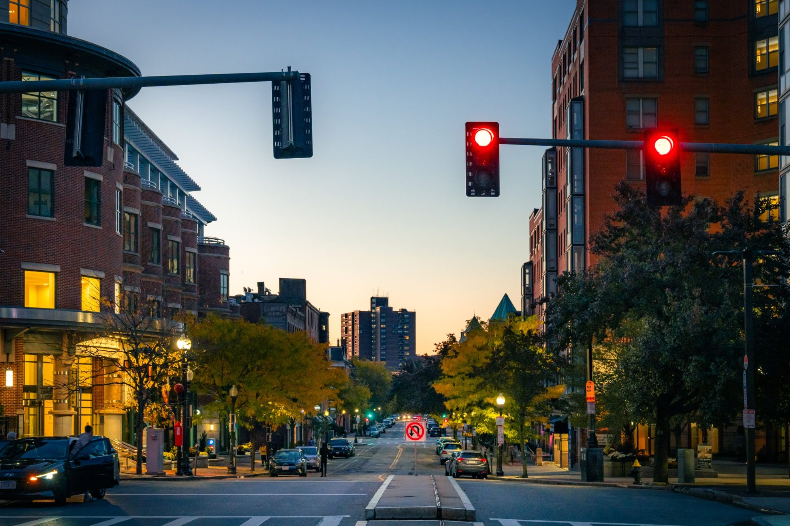
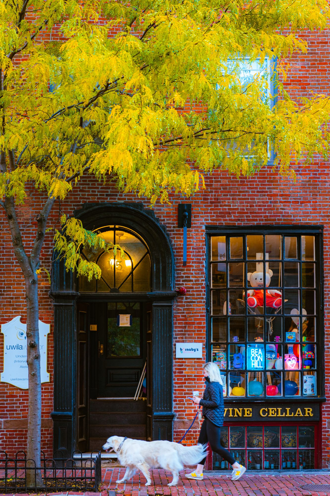
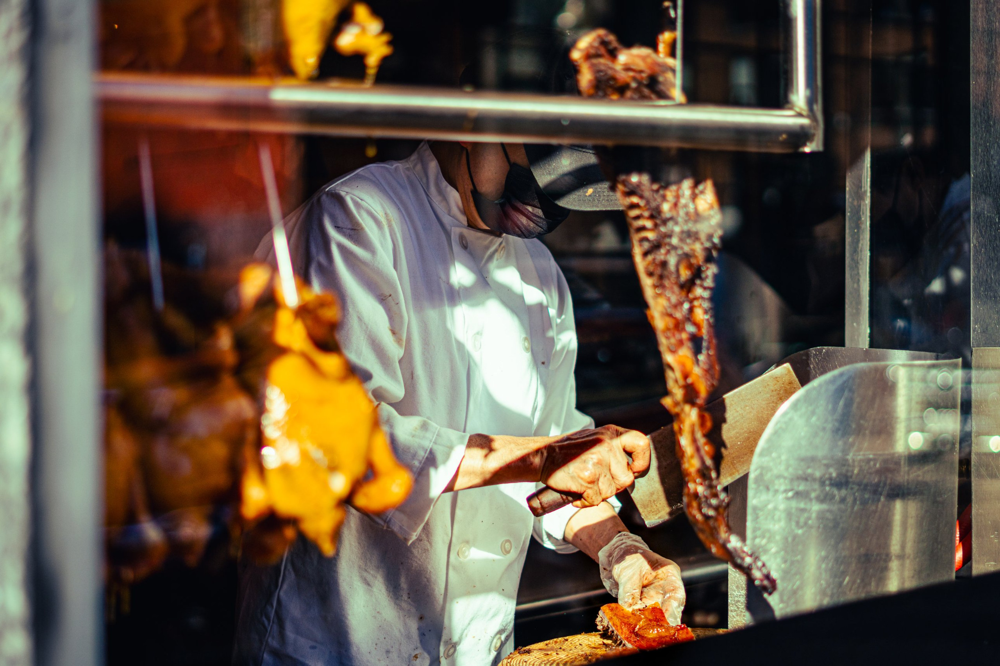
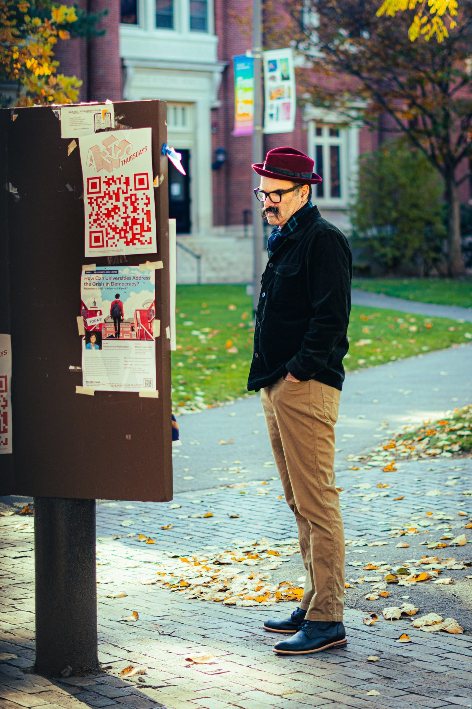
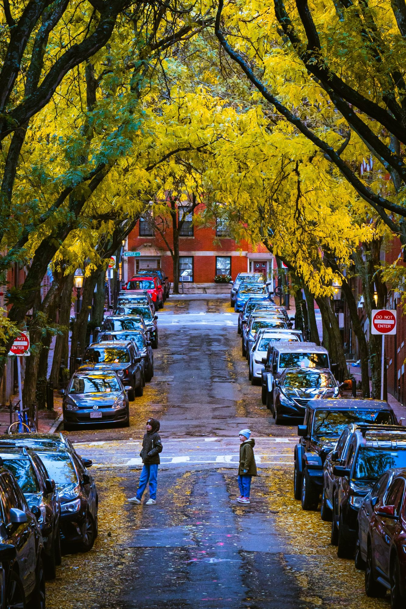

Autumn In Boston
It's 4 am. The sharp ring of my alarm slices through the silence of the early morning. In the dim light of my room, I fumble for the clothes laid out on the side table. Despite the chill that seeps through the walls of the house, I hurriedly dress, shivering slightly. The room is bathed in artificial light; I had forgotten to turn off the lamp in anticipation for today. I tiptoe past my roommates' doors, careful not to wake them, and head to the kitchen to prepare a quick breakfast. I’m going to Boston today, and I'm taking the first train to Boston.
Because it’s autumn, the most beautiful season in the city.
Walking to Worcester Station takes thirty minutes through quiet streets, the darkness only broken by sparse streetlights casting long shadows. A sense of unease tugs at me, but the tranquility of the night sky, speckled with stars, calms my restless heart. On the rudimentary platform, I blend into the crowd of early commuters - ordinary people whose lives revolve around this daily journey to Boston. Fortunately, there is no ticket inspector today, saving me ten dollars. Perhaps MBTA knows the difficulty of middle class; I rarely met ticket inspectors on the first train to Boston. Settling into a seat on the train, I pull out my iPad, reading the articles that are required for next week’s class. The train journey is a transformation – from the enveloping darkness of Worcester to the burgeoning dawn in Brookline, and finally, the peaceful blues and oranges that herald the Boston skyline.

Stepping out of Back Bay Station, I'm greeted by a city still in slumber. The early risers, mostly delivery drivers and café clerks, begin their day, the unsung harbingers of the city's awakening. The Boston Public Library stands before me, its usual hustle replaced by serene dawn light, making it appear more majestic than ever. I couldn't stop taking photos of the building. I stroll down Newbury Street, its fancy shops closed yet illuminated, creating an amazing vibe with the withered trees lining the sidewalks. Boston Common and the Public Garden are scenes of dichotomy: disciplined joggers weave through the paths while the homeless stir from their cold, open-air beds.

I keep walking to Beacon Hill, where I see red brick houses surrounded by fancy cars, luxurious restaurants, and wine shops. Here, I pause, camera at the ready, waiting for the perfect shot – a quaint store framed by an autumn tree, a woman passing by with her joyful dog. After a patient wait, I capture the moment, a snapshot that encapsulates the essence of Boston in autumn. In Chinatown, the energy shifts. Shops open early, with people queuing for groceries. At Hong Kong Eatery, I indulge in authentic BBQ pork and crispy roasted pork, the flavors transporting me back home as Eason Chan’s melodies play in the background. The sunlight streams in, illuminating the chef's skillful work.


I rarely take the subway since I came here for two reasons: first, I want to walk down every street in the city, and second, 2.4 dollars per ride is unaffordable for an international student who is not allowed to work in the States. However, I jump on the train to Cambridge to see the top university in the world. At Harvard Square, I'm struck by the European vibe – historical buildings, evocative statues, and an air of academia. The music from a street performer adds a layer of charm. I sit on a bench in Cambridge Common and open Zillow, searching for houses in Cambridge. Alright, dream it. My return journey is on foot, favoring the vibrant streets over the subway. Crossing the Longfellow Bridge, I'm rewarded with a breathtaking view – Boston's skyline against the backdrop of autumn foliage along the Charles River.

As I walk back to South Station, ready to return to Worcester, my iPhone shows 40,000 steps. Sitting in the lobby of South Station, I sift through the day's photos, reviewing a visual diary of my one-day journey. A nearby conversation catches my attention – an Asian girl is talking with a white guy. "Where are you going?" the guy asked. "Worcester!" she replied. "Oh, do you live there?" "Yes, I'm a student from Taiwan." What a coincidence! I talk with the girl on the train back to Worcester, saying how cool it is to meet someone who comes from Taiwan as well.
I start loving the city, especially, Autumn in Boston.
